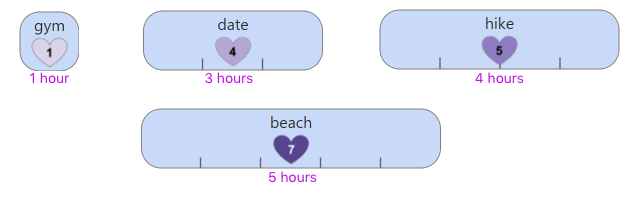
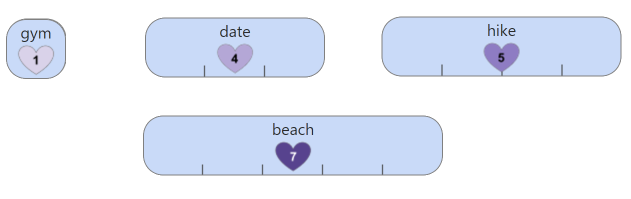

Dynamic Programming is a concept in computer science, mathematics, management science and bioinformatics, involving a method for solving a complex problem by breaking it down into a collection of simpler subproblems, solving each once, then saving and reusing each solution to solve a larger problem.
Let's walk through an example of this using something we all do on a daily basis: scheduling our free time. To do this, let's first talk about what activities you can do.
For example, you can go on a hike:
Notice activities have two main characteristics: their duration and how much enjoyment they give you.
Consider four daily activities that you would like to do at most once, but each one takes a specific amount of time:

Naturally, you get different amounts of pleasure from different things. Now, imagine if you gave each activity an "enjoyment value" where the number of points indicate a value of how much enjoyment you get from something (higher number = more enjoyment). Let's call this each item's "e.v." and make up some values for each activity:
If you were given a block time and a set of possible activities, how would you schedule your activities to maximize your enjoyment score?
What if you were given 100 activities and much more time? That's a much bigger problem!
Dynamic programming helps us break this big problem down into smaller subproblems to make it easier to solve. The first step is to start with the smallest subproblem, which is a schedule of one hour and the shortest activity. Let's do it!
The same idea applies when you have a timeline with three hours, four hours, and so on.
Here is where we will explain the concept of a table
What if we could also choose to go on a date in addition to the gym? If we have only one hour, does the date fit?
You're right, it doesn't fit. So we still have one hour. What can we do in one hour?
Let's look at our table. As you can see, we already know that in one hour we can go to the gym!
Explain 2 hour situation here
Explain 2 hour situation here
Explain 4 hour situation here
Watch how we fill in the table below!
Check out the full table below.